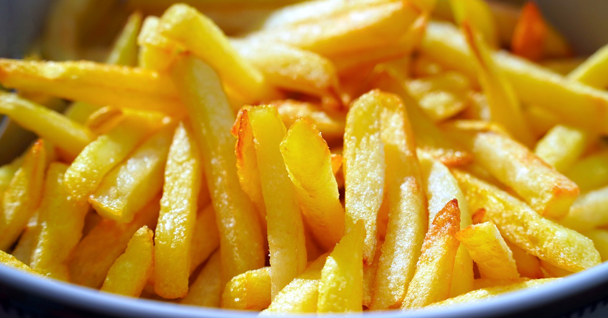

Papas frítas
Receta de papas frítas caseras

Ingredientes:
- 3 o 4 papas (300grs)
- Aceite
- Sal
Elaboración (pasos):
- Pelar las papas
- Cortarlas en bastones
- Calentar aceite en una sartén
- Cocinar hasta que estén doradas
- Removerlas del aceite y salar a gusto